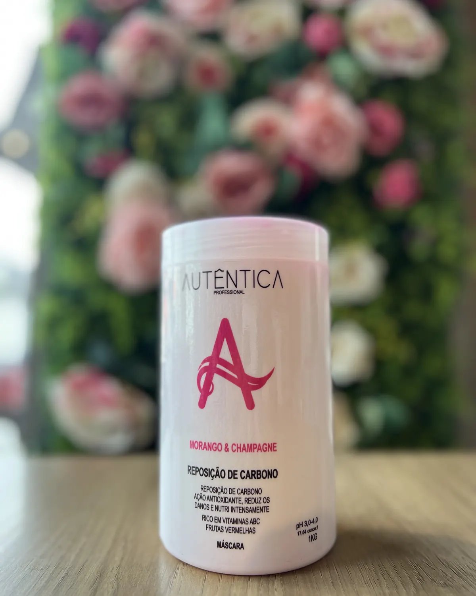

Recuperação e cronograma
Máscara Morango & Champagne 1 kg
Máscara profissional para protocolos de nutrição intensa.
Uso profissionalRevenda
Máscara de 1 kg da linha Morango & Champagne, em tamanho profissional para protocolos de tratamento no salão.
01
Ativos e tecnologia
Vitaminas A, B e C e frutas vermelhas. Faixa de pH indicada no rótulo: 3,0 a 4,0.
02
Para quem é indicado
Salões que realizam tratamentos de reposição de carbono e recuperação visual dos fios.
03
Resultado esperado
Entrega uma etapa concentrada de tratamento com rendimento profissional.
Escolha consciente
O produto certo começa com um bom diagnóstico.
A resposta do cabelo varia conforme histórico químico, estado da fibra, rotina e técnica de aplicação. Observe sempre a indicação do rótulo e, em procedimentos químicos ou produtos de uso profissional, conte com avaliação especializada.
Perfil de uso: Uso profissional · Revenda.